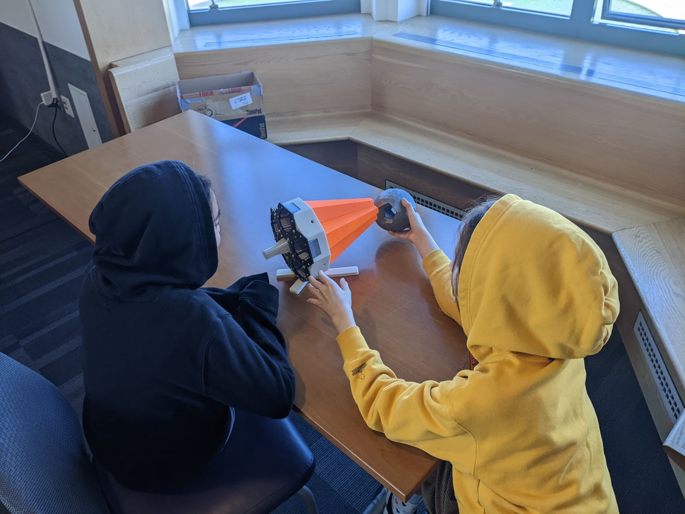
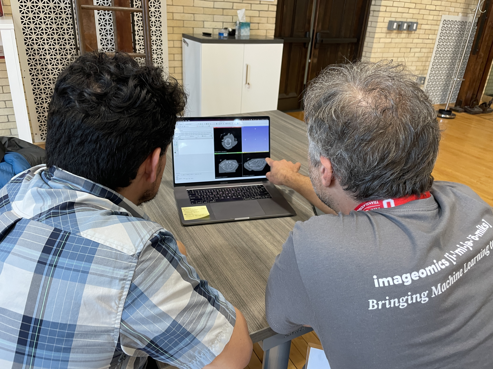

The HDR Ecosystem brings together a diverse collection of open, community-driven resources to support interdisciplinary, data-intensive research and learning. This centralized hub connects users to advanced tools, platforms, and materials that promote collaboration, reproducibility, and innovation across scientific domains. Guided by open science practices and FAIR data principles, the HDR Ecosystem empowers researchers, educators, and learners to explore complex questions, share knowledge, and accelerate discovery.
Learn about applications of data-driven science, through tutorials, training materials, recorded events, and STEM outreach content. All designed for diverse audiences and disciplines.

Explore code and software that enable hands-on application of advanced computational and Al tools. Users can explore workflows, use machine learning models, and reproduce scientific analyses.

Discover the curated datasets and trained models that provide the foundational research materials powering computational tools and reproducible workflows across disciplines.


A3D3 offers a collection of open-source software packages designed to support advanced, real-time AI and machine learning applications in scientific research. These include tools like HLS4ML for translating ML models to FPGA implementations, and ML4GW for gravitational-wave machine learning pipelines. A3D3 also offers publications, talks, and educational materials to support learning, outreach, and the scientific community.
ID4 offers a broad set of resources to support data-driven research and learning in materials, structures, and computational science. They curate open tutorials and training materials developed by its members, covering topics such as geometric algebra for scientific computing, graph neural networks, and molecular dynamics. In addition, the institute maintains a collection of research papers and open-source code repositories.
iHARP provides a rich set of resources to support collaborative, data-intensive polar research. They offer open science repositories, curated datasets, modeling tools, and access to advanced computing, alongside training materials and recorded events. These resources are designed to help researchers share methods, reuse data, and advance data-intensive polar science.

The I-GUIDE Platform provides an open science and collaborative environment for geospatial data-intensive convergence research and education focused on sustainability and resilience challenges and enabled by advanced cyberGIS and cyberinfrastructure. The Platform supports FAIR data principles while democratizing access to advanced cyberGIS and cyberinfrastructure and cutting-edge geospatial AI and data science capabilities.
Designed to accelerate research at the intersection of artificial intelligence and biology, the catalog highlights cutting-edge tools such as BioClip 2, KABR and the TreeOfLife-toolbox. Whether you are building new models, exploring biological patterns, or contributing to open science infrastructure, this catalog offers a centralized gateway to the tools shaping the future of AI for biology.
The HDR Ecosystem hosts a repository of educational materials from the HDR community as a resource for educators, trainers, STEM outreach volunteers, and learners. The goal is to enable anyone to find useful materials for audiences ranging from kindergarten through the general public.